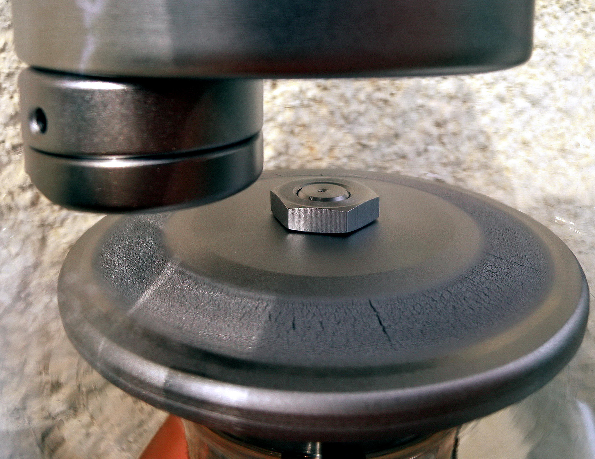

Make the intimidating subject understandable.
Atomic structure, x-ray production, interactions with matter, attenuation, inverse square law, filtration, generators and exposure relationships—shown step by step.
Visual learning • Clinical confidence • Registry preparation
Rad Mastery turns intimidating concepts into narrated, visual lessons. Learn the physics, understand image production, prepare for fluoroscopy and clinicals, then prove it with practice.
Independent educational resource. Not affiliated with or endorsed by ARRT.
The complete learning system
Every core area connects explanation, narration, animation, clinical application and practice so you learn the “why,” not just a definition.
Atomic structure, x-ray production, interactions with matter, attenuation, inverse square law, filtration, generators and exposure relationships—shown step by step.
kVp, mAs, SID, OID, focal spot, grids, collimation, distortion, magnification and technique selection with visual cause-and-effect demonstrations.
CR/DR, pixels, matrix, bit depth, histograms, exposure indicators, windowing, processing, artifacts, MTF and quality control.
Tube/receptor geometry, pulsed vs continuous fluoro, magnification, scatter, dose reduction, positioning and practical OR/C-arm workflow.
ALARA, time-distance-shielding, collimation, occupational monitoring, scatter, fluoroscopy safety, pregnancy considerations and dose reduction.
Positioning logic, anatomy recognition, image evaluation, common rotation errors and what to correct before repeating an exposure.
Portable exams, OR etiquette, transfers, communication, workflow, difficult patients, image checks, practical tips and “what I wish I knew” guidance.
Topic practice, timed mock exams, rationales, flashcards, weak-area review and progress tracking that points you toward what to study next.
What sets Rad Mastery apart
Reading the same paragraph five times is not a learning strategy. Rad Mastery gives you multiple ways to make the concept stick.
Free lesson preview
Experience the teaching style before you pay. Follow electrons from cathode to anode, see where Bremsstrahlung and characteristic radiation come from, then check your understanding.

From classroom to clinical
Rad Mastery is designed to help students become more confident learners and more prepared clinical radiographers.
Portable and OR workflow, patient communication, transfers, image evaluation, difficult positioning and practical department habits.
Upload your own notes or homework, ask questions, learn from current students and graduates, save helpful threads and share tips—without patient PHI.
Track lessons, questions, mock exams and weak areas so you know what you have mastered and what deserves your next study session.
Free practice
Try five original questions with immediate explanations. Full members get topic practice, bookmarks, missed-question review and timed mock exams.
Included tools
Use quick references, study planners, flashcards, mock exams, community help and downloadable resources alongside the lessons.